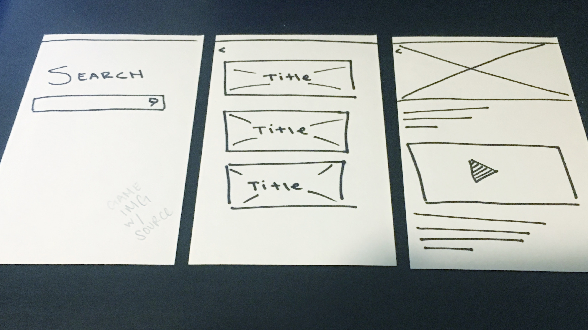
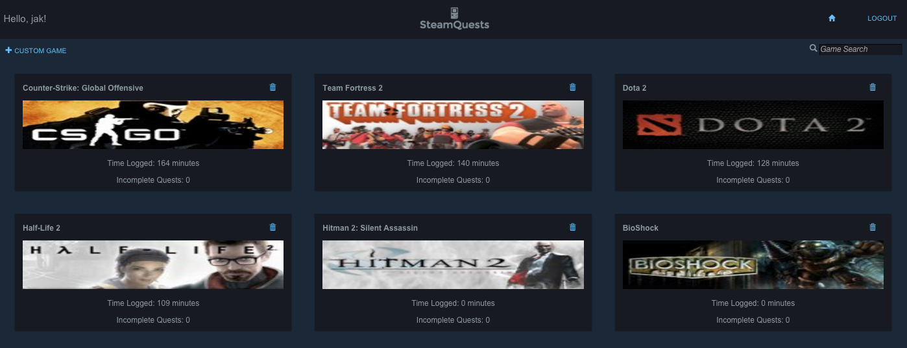
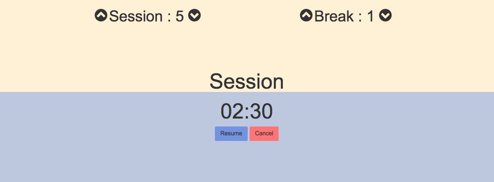
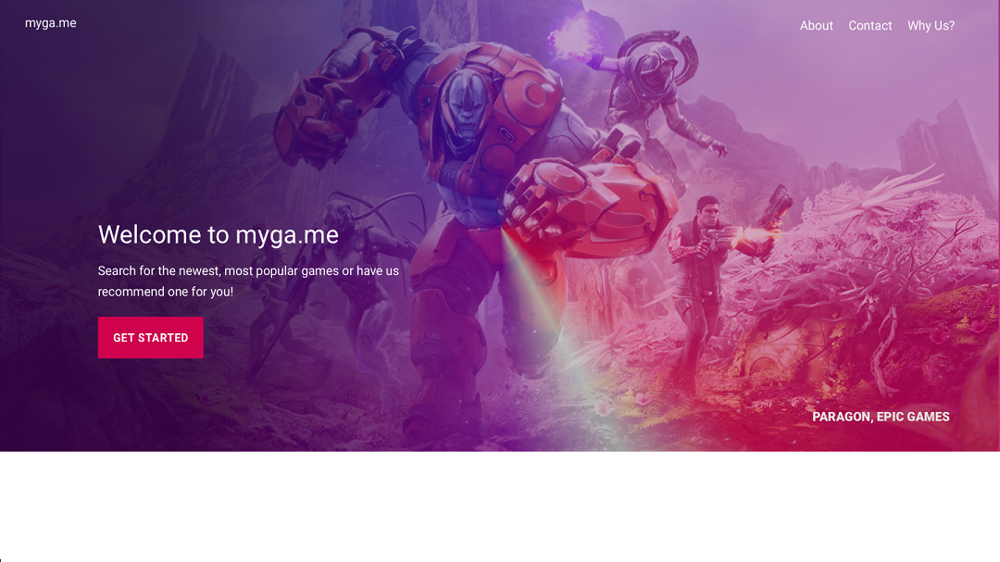

Sync.gg
UX project. Includes interviews, personas, feature prioritization, card sort, wireframes (lofi & hifi) and prototyping
Steam Quests
SteamQuests is a full stack web app that allows a user to create custom lists specific to a their currently owned games via Steam.
Featured technologies: Steam API, Twitter Bootstrap
QuikPix

QuikPix is a full-stack Instagram Clone. Users can upload images via FilePicker, like, comment and rate the photos posted by the other site users.
Featured technologies: FilePicker, Twitter Bootstrap
Pomodoro Clock
Based on the pomodoro technique, a user can use this front end web app to break down work intervals between sessions and breaks. The application displays the remaining time as it fills the page with a new color.
Myga.me

My Journey
I am a
Bay Area native who loves all things design, technology and gaming. I graduated from University of San Francisco in May 2015 with a Bachelor's in Politics and a minor concenteation in Legal Studies. Most of my studies included advocacy and a focus in helping underrepresented communities. However, through my studies, I realized that the most effective way to help people in need might be through technology. Before I graduated, I took some Computer Science classes to test the waters and began my journey into tech.
After graduation, I enrolled in a programming bootcamp hoping to learn about Front End Web Development. While my programming skills got stronger, I was drawn to the User Experience & Design aspects of web. I took some classes in Visual Design and User Experience Design and am currently a User Experience Researcher & Designer. My background in politics gives me a unique understanding of human nature and working with so many high-risk indiviudals taught me how to design for different social groups.
In my spare time, I have been studying Video Game design and user experience design in the beauty & health field.